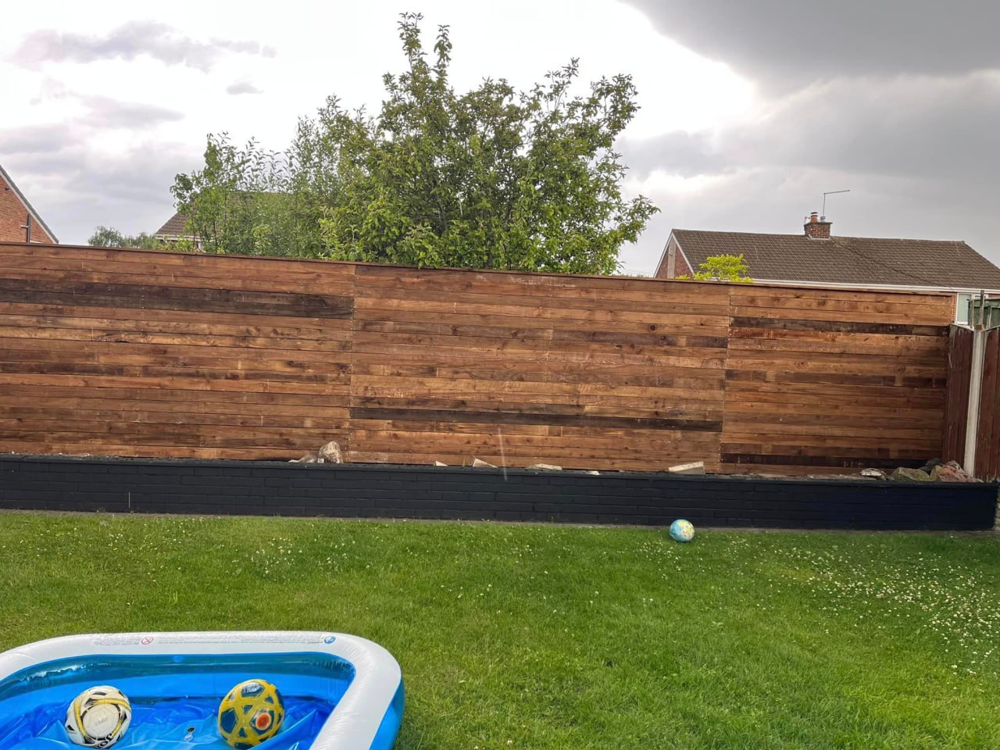

Secure & Stylish Entrances
We supply and fit a variety of custom-made gates to enhance security and curb appeal.
Custom Gate Solutions for the North West
A well-crafted gate is the perfect finishing touch for any property, providing security while enhancing its aesthetic appeal. At RCT Fencing, we specialise in designing and installing a wide range of gates, from classic wooden garden gates to robust metal driveway gates.
Every gate we install is made-to-measure, ensuring a perfect fit and flawless operation. We work with you to choose the right materials and style to complement your fencing and property, delivering a product that is both beautiful and built to last.
- Made-to-Measure for a Perfect Fit
- High-Quality Timber & Metal Options
- Professional Installation & Hardware
